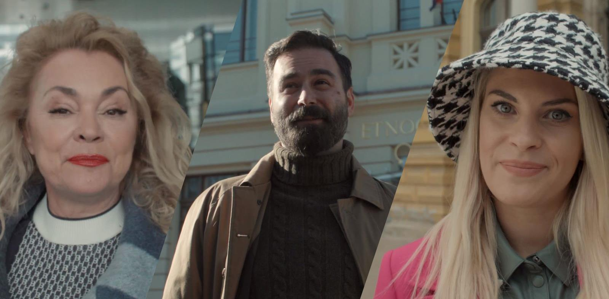
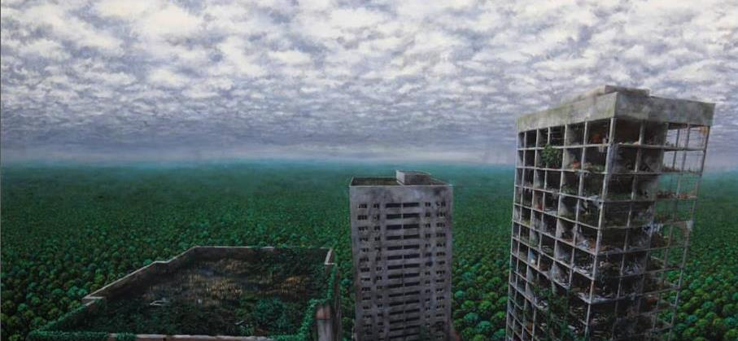
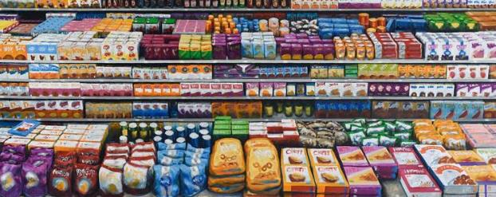

Vrijeme je da se kultura vrati ljudima, a ljudi kulturi. Telegram je pokrenuo projekt Nosim kulturu

“Čini mi se da nismo ni svjesni vrijednosti kulture oko nas dok ona nije ugrožena ili dok je ne izgubimo. Možda je uzimamo zdravo za gotovo. No, u trenucima kriza često dolazi do dubljeg razumijevanja toga koje su stvari važne, a koje nebitne. Zato mislim da je svaka akcija koja promiče kulturu dobrodošla i poželjna”, govori nam poznati hrvatski akademski slikar Sebastijan Dračić.
Prošla godina bila je upravo takva, prožeta malim i velikim krizama. Osim sveprisutne pandemije koronavirusa koja i dalje ne jenjava, pogodila su nas dva teška potresa, u ožujku i prosincu 2020. Kao posljedica te dvije okolnosti, hrvatski su muzeji izgubili četiri milijuna posjetitelja.
Distopijski pejzaži mogućih budučnosti u MSU

Tematika “Kobi” obuhvaća fenomene današnjice koji su nam dobro poznati, kao što su način života, masovni mediji, tehnologija i konzumerizam. Ne prilazim im nužno s kritikom, može ih se shvatiti višeznačno, možda čak i kontradiktorno, a slike su prožete i zdravom dozom humora – rekao je Dračić ističući kako su ga oduvijek inspirirale ideje distopije i utopije, SF-a i djela pisaca kao što su Aldous Huxley i George Orwell, a to će se vrlo dobro vidjeti u Kobi.
– Osim SF klasika, čitao sam ponovno poemu “Smrt Smail-age Čengića” u kojoj jedno pjevanje nosi naziv “Kob”, a ta riječ i njezino značenje nekako su mi se posebno urezali u pamćenje. Vjerujem kako će svi koji posjete izložbu u slikama vidjeti zašto je za naziv odabrana ta riječ koja u sebi nosi jednu posebnu, sudbonosnu težinu objasnio je autor.
Izložbu čini devet novih radova punih neodređene slutnje koja nas tjera da propitujemo svoju ulogu u svijetu koji nas okružuje.
Za ovu izložbu oborio sam osobni rekord, sliku sam stvarao tri godine

Ciklus ‘’Kob’’ nastavlja se na moj prethodni ciklus slika ‘’Sivo’’, a u njima obrađujem različite fenomene suvremenosti. Nazivi slika su mi važni jer pomažu u tumačenju, a ljudima omogućuju da oni sami interpretiraju i možda pronađu još nešto u njima. Često se u nazivima referiram na razne autore i njihova djela, ili dajem nazive koji mogu biti s jedne strane sugestivni, a s druge su višeznačni.
stvaram prizore izobličene stvarnosti koja promatrača uvodi u prostor koji postoji između snova i stvarnosti, a nastaje iz fragmenata svijeta u kojem živimo. To su prizori moguće prošlosti i konture nesigurne budućnosti. Kako živimo u vrlo zanimljivim vremenima inspiraciju nije teško pronaći. Svaka slika donosi jedan fragment tog zamišljenog svijeta koji je kombinacija elemenata moguće prošlosti, sadašnjosti, budućnosti i fikcije. Jedne slike bi bile ukorijenjene u sadašnjem dobu i naizgled prikazivale nešto što je danas prisutno, dok bi druge evocirale daleku prošlost ili budućnost.
Sve one zajedno stvaraju osjećaj cikličnosti vremena, u kojem postoji uzrok i posljedica, a redoslijed ne mora uvijek biti identičan. Ukazujem na zanimljive fenomene sadašnjice koji mogu pretpostaviti određene probleme, uzrokovane nepromišljenim postupcima, u bliskoj budućnosti.